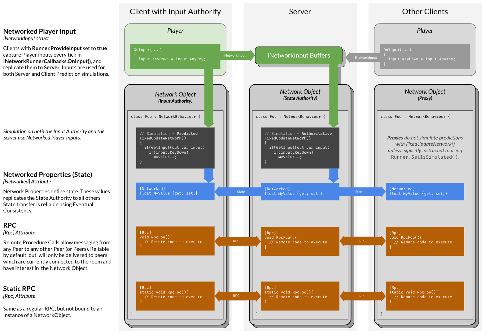

How To use Photon Fusion 2
My team has just finished the vertical slice for our physics-based dodgeball party game, Ballistic.
I am the network programmer on the team, responsible for making sure the mayhem was consistent for all players. To accomplish this, I dove into Photon Fusion 2, and I have been pleasantly surprised by how easy to use, and remarkably powerful it is. Having become familiar with its essential functionality, I felt it would be useful to create a tutorial for others looking into Fusion.
Since I know Fusion 2 is currently new, and likely to get some changes, it’s worth making the disclaimer that the version I will be describing is 2.0.0, the brand new current build. I’m writing this in February 2024. I will also be discussing host-mode, since that’s what I used for Ballistic. For other indie-games, I’ve also heard that shared-mode works great.
Getting Started
There isn’t much for me to say here, since I feel the documentation does a pretty good job. It really is simple to get started. The only piece I’d like to add on is that there are two other unitypackage files contained within the initial fusion unitypackage. These two contain some other scripts that may or may not be useful to you, but are referenced in the documentation, particularly NetworkRigidbody. If you ever see a script referenced that you want to use, but it doesn’t show up when you search for it in “add component”, it might be because it’s in one of those extra packages.
I won’t be rehashing the step by step guide they give, instead I’ll be talking about how to structure code to work with Fusion, showing you the next steps beyond the tutorial, and demonstrating Fusion using Ballistic as an example. You should first follow Photon’s basic tutorial before coming back here to read about how to build off of it.
To summarize some of the basics you’ll need from the tutorial:
Spawning the NetworkRunner is done in a StartGame() method, which takes a GameMode enum value that says whether the runner is creating a lobby as a host, or joining a lobby as a client, and a SessionName string which is used to uniquely identify lobbies.
You need a MonoBehaviour which implements the INetworkRunnerCallbacks interface, which are used to listen for different network events.
All game objects that you want to be networked need to have the NetworkObject script attached to it. State that should be synchronized can then be defined inside of a NetworkBehaviour script that you create.
NetworkBehaviour is Fusion’s networked equivalent to MonoBehaviour. Spawned() is called after the NetworkRunner has instantiated it, Render() is roughly equivalent to Update(), FixedUpdateNetwork() is roughly equivalent to FixedUpdate(). You still have access to those normal MonoBehaviour methods.
Client input is collected in the OnInput() NetworkRunner callback, stored in a struct that implements INetworkInput, and then received by your character controller NetworkBehaviour using the GetInput() method.
In FixedUpdateNetwork(), use Runner.DeltaTime instead of Time.fixedDeltaTime.
Besides that, this is a link to the correct download page for the unity package.
And this is a link to the Fusion 2 manpages.
The NetworkRunner Prefab
In Fusion, the NetworkRunner class is the main interface for Fusion’s API. It’s responsible for connecting to Photon’s cloud services, all NetworkBehaviours have a reference to it through the Runner attribute, and it maintains synchronized object IDs for all NetworkObjects. If a NetworkRunner doesn’t exist in the scene, then the client isn’t online.
For most games, the NetworkRunner would be instantiated when the player clicks a “Host” or “Join” button, which will call a StartGame() method. Unlike the example shown in the documentation, I prefer to keep the StartGame() method in a separate script from the INetworkRunnerCallbacks implementation. Instead I put it in a NetworkRunnerHandler script, which will contain the logic for hosting and joining.
public class NetworkRunnerHandler : MonoBehaviour
{
// NetworkRunner prefab that also contains your other networked object managers
[SerializeField] private NetworkRunner networkRunnerPrefab;
// Input field used to input the lobby name the player wants to join
[SerializeField] private TMP_InputField lobbyNameInputField;
// Invoked by "Host" button OnClick event
public void OnHost()
{
// Prevent multiple instances of the NetworkRunner from being instantiated
if (FindFirstObjectByType<NetworkRunner>() != null)
{
return;
}
string lobbyName = /* generate unique lobby name here */
;
StartGame(GameMode.Host, lobbyName);
}
// Invoked by "Host" button OnClick event
public void OnClient()
{
// Prevent multiple instances of the NetworkRunner from being instantiated
if (FindFirstObjectByType<NetworkRunner>() != null)
{
return;
}
string lobbyName = lobbyNameInputField.text;
StartGame(GameMode.Client, lobbyName);
}
// Pretty much the same as the tutorial
private void StartGame(GameMode mode, string lobbyName)
{
// ...
}
}
The INetworkRunnerCallbacks can then be put into a separate NetworkRunnerCallbacks class, attached to the same prefab as the NetworkRunner. I got this pattern from this tutorial series for Fusion 1. Along with these two components, all managers that are handling networked objects are best attached to the NetworkRunner prefab. A key difference between normal and networked managers is that you should really treat your networked managers as wrappers around the NetworkRunner. This is because the NetworkRunner already maps all NetworkObjects to unique keys, which are their network ID. So most managers will be wrappers around Runner.Spawn(), Runner.Despawn(), and Runner.TryGetNetworkObject().
Network Object Managers
For Ballistic, I kept our object managers as MonoBehaviours. However, I could easily see why you want to make them NetworkBehaviours. I kept them client-sided because the only player instance that should be doing any object management is the host. For clients, our object managers were pretty much just message brokers, used to distribute reset events. As an example, this is a simplified version of the player manager from Ballistic:
public class NetworkPlayerManager : MonoBehaviour
{
private NetworkRunner runner;
public void Init(NetworkRunner runner)
{
this.runner = runner;
// other setup stuff...
if (runner.IsServer)
{
// host specific set up stuff...
}
}
// The player prefab
[SerializeField] private NetworkPrefabRef playerPrefab;
// NetworkPlayer is our character controller class
private Dictionary<PlayerRef, NetworkPlayer> spawnedPlayers =
new Dictionary<PlayerRef, NetworkPlayer>();
// Spawns a new player prefab, and associates it with the PlayerRef
// Should only be called by the host
public NetworkPlayer SpawnPlayer(PlayerRef player)
{
if (!runner.IsServer) return null;
// Create a unique position for the player
Vector3 spawnPosition = Spawner.GetSpawnPoint();
// Use Runner.Spawn() to instantiate the player on all clients
NetworkObject networkPlayerObject = runner.Spawn(playerPrefab, spawnPosition, Quaternion.identity, player);
// Get character controller so that it can be cached in spawnedPlayers
NetworkPlayer netPlayer = networkPlayerObject.gameObject.GetComponent<NetworkPlayer>();
// Keep track of the player objects for easy access
spawnedPlayers.Add(player, netPlayer);
// Map NetworkObject to PlayerRef so that it can also be retrieved with Runner.TryGetPlayerObject()
runner.SetPlayerObject(player, networkPlayerObject);
return netPlayer;
}
// Gets the player's object, expected to be used by clients
public NetworkPlayer GetPlayer(PlayerRef playerRef)
{
if (!spawnedPlayers.ContainsKey(playerRef))
{
// Clients will need to get the player's object from the runner, since
// their player manager isn't tracking them
if (runner.TryGetPlayerObject(playerRef, out var obj))
{
AddPlayer(playerRef, obj.GetComponent<NetworkPlayer>());
}
else
{
return null;
}
}
return spawnedPlayers[playerRef];
}
// Removes a player from the game, should only be called by the host
public void DespawnPlayer(PlayerRef player)
{
if (runner.IsServer && spawnedPlayers.TryGetValue(player, out var netPlayer))
{
spawnedPlayers.Remove(player);
runner.Despawn(netPlayer.GetComponent<NetworkObject>());
}
}
}
The only method here that clients ever need to use is GetPlayer(), which will still work fine as long as you relate your objects to their PlayerRef or NetworkId since the NetworkRunner maintains its own map with these.
Instead of using Awake(), managers have an Init() method that takes a reference to the NetworkRunner. Each manager’s Init() will be run by the NetworkRunnerCallbacks script. This is because the managers shouldn’t try to access anything from the NetworkRunner until it is completely set up, which is done asynchronously. One of the NetworkRunner callbacks, OnConnectedToServer(), will work for clients. However, this callback is called for the host when they first connect to Photon’s cloud services, not when it has established itself as a host of a lobby. The best way I’ve found to track when the host is ready to have its managers initialized is in the OnPlayerJoined() callback.
// In NetworkRunnerCallbacks...
// Dirty bool to track if managers have been initialized yet
private bool initialized = false; private void InitManagers() {// Call manager Init() methods...
initialized = true; } public void OnPlayerJoined(NetworkRunner runner, PlayerRef player) { if (runner.IsServer && !initialized) { InitManagers(); } if (runner.IsServer) {// Spawn player...
} } public void OnConnectedToServer(NetworkRunner runner) {// This means host will have call init twice,
// keep host specific initialization steps wrapped in Runner.IsServer check.
InitManagers();// Set back to false so that host will initialize managers again after runner is ready
initialized = false; }
OnPlayerJoined() is called when the host’s player prefab is instantiated, which means it’s only called when the runner is ready to start spawning networked objects. Another option is to have a coroutine waiting for Runner.IsServer to become true, given that there is only 1 player in the lobby, which must be the host. Otherwise, I haven’t found an explicit event Fusion provides.
Network Level Manager
Most managers will follow the basic structure the NetworkPlayerManager uses. However, the NetworkLevelManager, which is responsible for handling and synchronizing scene transitions, is a special beast of its own. The NetworkRunner, given this line of code from StartGame():
// Add default scene manager
sceneManager = runner.gameObject.AddComponent<NetworkSceneManagerDefault>(); runner.StartGame(new StartGameArgs{ GameMode = mode, Scene = scene, SessionName = lobbyName, SceneManager = sceneManager });
Will be able to do most scene loading tasks that you’ll need. For basic scene transitions, it’s a simple call:
int buildIndex = SceneManager.GetSceneByName(sceneNameStr).buildIndex; Runner.LoadScene(SceneRef.FromIndex(buildIndex));
It’s worth noting that the default LoadScene() expects a SceneRef. The easiest way to make a SceneRef to me is using its FromIndex() constructor.
This will load the scene on all clients for you, but doesn’t guarantee that loading is synchronized. In my own testing, the host usually loads into the scene a second or 2 before other clients. To prevent this from happening, the clients need to confirm with the host that they have loaded into the scene. This can be done using the OnSceneLoadDone() NetworkRunner callback. Once all of the clients have confirmed to the host that they’ve loaded in, the host can then notify the clients, including themselves, that their controllers can be unpaused. In the time spent waiting for the other clients to confirm, the host can then be resetting and generating objects.
Data Transfer
The Fusion docs define 3 different channels for data transfer. I think this quote from the Remote Procedure Calls page is a great summary for what each is useful for:
Remote Procedure Calls, simply referred to as RPCs, are ideal for sharing
punctual game events; in contrast the Input Struct and [Networked] properties
are the go-to solutions for sharing state between network clients that are
undergoing continuous change.

In general, your NetworkBehaviour classes should only have networked properties if those properties are going to be changed in a FixedUpdateNetwork() call. Any state changes that happen on events should be handled through RPCs.
Network Properties
In Fusion’s tutorial section, they show code using a switch statement to register reactions to state changes. I don’t believe this is very extendable code for classes that require a lot of synchronized state. For example, in Ballistic our player controller uses networked properties to track animator bools. In the future, we’re looking to add in ball buffs that will include status effects which should be synchronized with networked properties. If we used a switch statement, animator logic and gameplay logic would end up mushed together.
Instead, I propose using a structure like this:
//Simple delegate type for assigning event listeners
public delegate void Notify(); public class Example : NetworkBehaviour {// This object's change detector
private ChangeDetector detector;// A map of event listeners, each assigned to a networked attribute
private Dictionary<string, Notify> changeListeners; private void SetChangeListeners() { changeListeners = new Dictionary<string, Notify> { { nameof(myProperty), MyPropertyOnChange } }; }// Networked properties...
[Networked, HideInInspector] public type myProperty; void MyPropertyOnChange() {// Reaction to state change...
} public override void Render() {// Call the property's change listener if one has been assigned
foreach (var propName in detector.DetectChanges(this)) { if (changeListeners.containsKey(propName)) { changeListeners[propName](); } } } public override void Spawned() {// Init change detector to current game state and set up listeners
detector = GetChangeDetector(ChangeDetector.Source.SimulationState); SetChangeListeners(); } }
By splitting each cases’ logic into explicit event listeners, it makes it easier to manage individual properties since you can ignore everything except the property you’re focused on. This does come with a memory overhead trade-off, but I think this balances out since objects that would need logic management like this will usually be few in number.
Remote Procedure Calls (RPCs)
RPCs are easily my favorite feature in Fusion. I’ve found that their most common use is for creating networked wrappers around normal procedure calls. For example, to throw a ball in Ballistic, we made a NetworkApplyForce(), which calls RPCs to use the normal rigidbody ApplyForce() across all clients.
The general structure for these wrappers looks like this:
// The actual procedure
public void Procedure(...) { ... }// The networked wrapper around the procedure call
public void NetworkProcedure(...) { if (Runner.IsServer) {// Tell all clients including themselves to run the procedure
RPC_EnforceProcedure(PlayerRef.None, ...); } else {// Local prediction step, prevents latency
Procedure(...);// Different RPC arguments are required if object has input authority
if (Object.HasInputAuthority) { RPC_PlayerRequestProcedure(Runner.LocalPlayer, ...); } else { RPC_RequestProcedure(Runner.LocalPlayer, ...); } } }// Called by host, run by clients
[Rpc(RpcSources.StateAuthority, RpcTargets.All, HostMode = RpcHostMode.SourceIsServer, TickAligned = false)] public void RPC_EnforceProcedure(PlayerRef source, ...) {// Avoid double-running procedure
if (Runner.LocalPlayer == source) return;// Run procedure on each client
Procedure(...); }// Called by player's local object, run by host
[Rpc(RpcSources.InputAuthority, RpcTargets.StateAuthority, HostMode = SourceIsHostPlayer, TickAligned = false)] public void RPC_PlayerRequestProcedure(PlayerRef source, ...) {// Only accept procedure call if host can verify its validity,
// can be skipped if you're not worried about that
if (!RequestIsValid(source, ...)) return;// Pass procedure call on to other clients
RPC_EnforceProcedure(source, ...); }// Called by client, run by host
[Rpc(RpcSources.Proxies, RpcTargets.StateAuthority, HostMode = SourceIsHostPlayer, TickAligned = false)] public void RPC_RequestProcedure(PlayerRef source, ...) {// Only accept procedure call if host can verify its validity,
// can be skipped if you're not worried about that
if (!RequestIsValid(source, ...)) return;// Pass procedure call on to other clients
RPC_EnforceProcedure(source, ...); }
The naming conventions for RPCs can be a bit confusing. The idea is that one client can call a function on another client’s computer. This means that the function should be named from the caller client’s perspective, but implemented from the callee client’s perspective. RPC_EnforceProcedure() is named that way because the server calls it to make the clients run the procedure.
In this format, I show a second check if the callee has input authority, but you usually will only need a request RPC for either input authority (normally just the local player’s game object), or proxies (any other networked object). Having the actual procedure be public is also important. If another RPC wrapped procedure wants to call it, it’s more performant to only call it locally. Otherwise, you’ll have RPCs calling RPCs calling RPCs, which will be creating unnecessary network traffic. The last piece to note is the use of TickAligned. By setting this to false, the procedure will run as soon as the targets receive the message, as opposed to the next network update tick. This may, or may not be necessary for what you need.
I personally find RPCs the easiest form of data transfer to reason about, so I recommend using them during prototyping for the majority of data transfer, excluding player input. Then, move the state that’s constantly changing into networked properties (i.e. if the RPC is being called every FixedUpdate).
NetworkInputData Struct
This is pretty straightforward. The main gotcha is to not use frame specific events like OnKeyDown() or OnKeyUp(). Besides that, filling it with a ton of data isn’t ideal since it, to a degree, describes the package that the client will be sending to the host every tick. Fusion does some compression on its own to shrink the package size though, so as long as you’re storing mostly bools in it, efficiency isn’t something to worry about until you measure network performance.
You can also implement pausing in OnInput(). Since most multiplayer games don’t actually stop the game when a player pauses, you only need to stop collecting input when paused:
// In NetworkRunnerCallbacks ...
private bool paused = false; void Update() { if (Input.GetKeyDown(KeyCode.Escape)) { paused = !paused; } } public void OnInput(NetworkRunner runner, NetworkInput input) { var data = new NetworkInputData(); if (!paused) {// Collect input ...
} input.Set(data); }
NetworkTransform
During development for Ballistic, we found that Fusion’s provided NetworkTransform class was unreliable. It regularly caused rubber-banding, even on the host instance. I’m still not entirely sure why it behaved like that, but my workaround was to simply create a replacement.
// Gives host complete authority over network objects' transforms
public class NetworkPosition : NetworkBehaviour { private ChangeDetector detector; [Networked, HideInInspector] public Vector3 position { get; set; } [Networked, HideInInspector] public Vector3 rotation { get; set; } [Networked, HideInInspector] public Vector3 velocity { get; set; } [Networked, HideInInspector] public Vector3 angVelocity { get; set; } private Rigidbody rig; public override void Spawned() { detector = GetChangeDetector(ChangeDetector.Source.SimulationState); rig = GetComponent<Rigidbody>(); } public override void Render() {// Do not enforce host's previous tick onto current tick
if (Runner.IsServer) return;// Update clients' state to match host
foreach (var attrName in detector.DetectChanges(this)) { switch (attrName) {// Update transform values
case nameof(position): transform.position = position; break; case nameof(rotation): transform.eulerAngles = rotation; break;// Update rigidbody velocities for simulation
case nameof(velocity): if (rig && !rig.isKinematic) rig.velocity = velocity; break; case nameof(angVelocity): if (rig && !rig.isKinematic) rig.angularVelocity = angVelocity; break; } } } public override void FixedUpdateNetwork() {// Only the host should be updating networked state
if (!Runner.IsServer) return; position = transform.position; rotation = transform.eulerAngles; if (rig) { velocity = rig.velocity; angVelocity = rig.angularVelocity; } } }
This is pretty stripped down from what NetworkTransform offers, but it was essentially all we needed for Ballistic (minus some dirty bools I removed to make this example simpler). If you find that your game has unexpected stuttering, try disabling NetworkTransform components. If the stuttering stops then you should experiment with different methods of applying transform changes, or create your own synchronization script that fits what you need.
Client-Sided Scripts
My general design philosophy is that everything should be client-sided, until you know it needs to be networked. Some pieces of the game will pretty much always be client-sided, such as sound, particles, and UI. Sometimes, you can also avoid unnecessary network objects by having normal MonoBehaviours be listening to events that will be triggered by RPCs. For example, our current implementation of ball buffs uses MonoBehaviour scripts. These are then listening to events such as OnThrow, OnBounce, and OnHitPlayer from the NetworkBehaviour dodgeball script:
public class NetworkDodgeball : NetworkBehaviour
{
// Ball buff attached to this ball
private BallBuff buff;
// Public interface for triggering the event
public void OnThrow(PlayerRef thrower, Vector3 throwDir)
{
// Only the host can trigger this event
if (Runner.IsServer)
{
RPC_EnforceOnThrow(thrower, throwDir);
}
}
//RPC for distributing the event
public void RPC_EnforceOnThrow(PlayerRef thrower, Vector3 throwDir)
{
// Get the player controller from the player manager
buff.OnThrow(NetworkPlayerManager.Instance.GetPlayer(thrower), throwDir);
}
}
public class BallBuff : MonoBehaviour
{
public void OnThrow(NetworkPlayer thrower, Vector3 throwDir)
{
// Apply ball buff effect without needing to think about any networking
}
}
Each dodgeball’s buff doesn’t need to be networked itself. Any other objects can also subscribe to these events, and avoid having to be networked. This also gives other programmers on your team a way to avoid dealing with networked code, since this abstracts it behind events.
You’ll also probably need client-sided scripts for enabling objects only the local player should have. A common one is the camera. This will usually be a child in the player prefab’s hierarchy, which should only be active on the local player’s instance. In this case, you can use Object.HasInputAuthority, which returns true if the object is associated with the local player instance, in the character controller script to check if the camera should be active or not. You might also want to cache each player’s PlayerRef on the character controller so that it can be compared against Runner.LocalPlayer, and give you easy access to that value in general.
Handling Network Events
Network events are handled through the NetworkRunnerCallbacks interface. The main network events you’ll be dealing with immediately are disconnections. The main callbacks for handling these are OnDisconnectFromServer(), and OnShutdown(). OnShutdown() is called when the NetworkRunner is told to destroy itself with Runner.Shutdown(). Both are fairly straightforward, providing an enum for reason reporting.
// In NetworkRunnerCallbacks...
// Popup prefab created on shutdown
[SerializeField] ConnectionPopup popupPrefab;// ShutdownReason enum has many values, these are the common ones for Ballistic
public void OnShutdown(NetworkRunner runner, ShutdownReason shutdownReason) { string message = "Network Connection Closed:\n"; switch (shutdownReason) { case ShutdownReason.Ok: message += "Host has ended the game."; break; case ShutdownReason.ServerInRoom: case ShutdownReason.GameIdAlreadyExists: message += "Failed to host lobby."; break; case ShutdownReason.GameNotFound: message += "Lobby could not be found."; break; case ShutdownReason.ConnectionRefused: case ShutdownReason.GameIsFull: message += "Lobby could not be joined."; break; case ShutdownReason.ConnectionTimeout: case ShutdownReason.OperationTimeout: case ShutdownReason.PhotonCloudTimeout: message += "Connection timeout."; break; default: message += "Network error."; break; } var popup = Instantiate(popupPrefab); popup.SetText(message); }
In Ballistic, these events create a popup for the player that will take them back to the main menu. This popup is instantiated as a separate game object from the NetworkRunner prefab, since the NetworkRunner’s game object is destroyed in the next frame. When the NetworkRunner is destroyed, it will also destroy all NetworkObjects. This clean up is important, since a new NetworkRunner has to be created for a client to reconnect.
If you want to add logic for accepting and rejecting clients, then you’ll use the OnConnectRequest() callback. This is run on the host instance when a new player attempts to join. By default, any connection request is accepted. If you want to explicitly accept or refuse requests, you can use the matching methods on the request argument:
// In NetworkRunnerCallbacks...
public void OnConnectRequest(NetworkRunner runner, NetworkRunnerCallbackArgs.ConnectRequest request, byte[] token) { if (LobbyHasSpace) { request.Accept(); } else { request.Refuse(); } }
Conclusion
What I’ve explained here is everything we needed to complete the vertical slice for Ballistic. Going forward, you might want to look into Fusion’s debugging and performance tooling, their Hitbox class for lag compensation, or project configuration to refine Fusion to give you exactly what you need. You’re given a lot of resources out of the box, so if you’re thinking of creating a component, I’d suggest digging through their docs to see if they’ve already made something that suits your needs.
Before working on Ballistic, multiplayer programming was like a monolithic job I only vaguely understood, but knew was extremely difficult. With Fusion, I feel like I’ve found a really amazing framework that I would even try to emulate for games I work on that aren’t made in Unity.